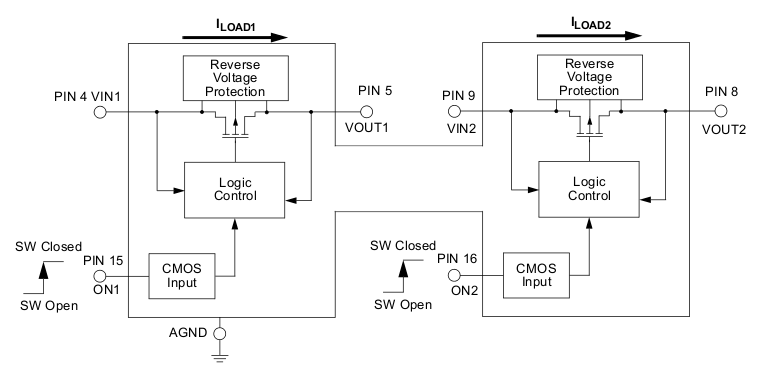

The SLG46125 has a dual-channel, 28.5 mΩ PMOS power switch designed to switch 1.5 to 5 V power rails up to 2A in each channel. When either channel is enabled, reverse-current protection will quickly open the switch in the event of a reverse-voltage condition is detected (a VOUT+50 mV > VIN condition opens the switch). In the event that the channel’s VIN voltage is too low, the power switch also contains an internal UVLO threshold monitor to keep or to turn the switch OFF. Each power switch is independently controlled via its own low-voltage compatible CMOS input.
The P-FET Power Switch need not be used in the same voltage domain as VDD. However, when VIN is not tied to VDD, using a large pull-down resistor on PWR_SW_ON1 and PWR_SW_ON2 is recommended to prevent current from flowing through the P-FET Power Switch while the device is not powered.

Figure 1. Dual P-FET Power Switch